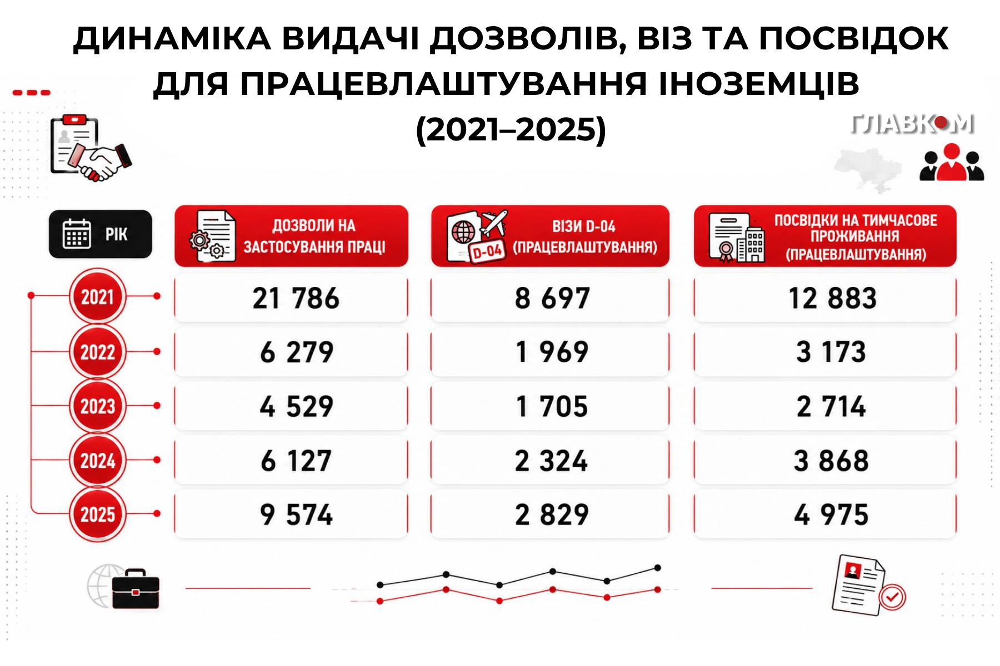

Трудова міграція: спроба соціалістичного аналізу.
Сьома Щур, Тайлер Щур
Останніми роками в українських медіа активно поширювалася інформація про полегшення умов для імміграції. Ця тема спрацювала як «вікно Овертона» (теорія про поступове зміщення меж допустимого в публічному дискурсі) і останнім часом в українських масових медіа розгорнулася справжня війна щодо цього питання.
Одні з двох найболючіших проблем української державності – економічна та демографічна кризи, причому демографічна криза тісно пов’язана з економічною. За даними ООН та Світового банку, війна, величезна кількість біженців з країни та економічна нестабільність суттєво вплинули на рівні народжуваності та смертності в Україні. А це, в свою чергу, ставить стратегічне питання: якщо немає росту населення, хто буде працювати?
Проблема, насправді, полягає не в тому, що в Україні немає робочих місць для українців – їх більш ніж достатньо. Щоправда, йдеться про переважно важку фізичну працю, сферу обслуговування, а також фронт. Уся ця праця пов’язана не лише з низькою зарплатою, недостатньою для утримання сім’ї, а й, у випадку з фронтом, із можливістю стати фізичним чи психоемоційним інвалідом або просто загинути.
Українським правлячим класам необхідно якось розв’язати ці проблеми, саме тому й виникає потреба в імміграції – залучити громадян Індії чи Пакистану до України, дати їм роботу, певний рівень життя та спробувати інтегрувати їх. Вони створять сім’ї, народять дітей, які, до речі, працюватимуть там, де не працюватиме українець. Наші владні кола намагаються вибудувати хоч якусь стратегію, але ж де гарантія, що буржуазна українська держава взагалі здатна на довгострокове соціальне забезпечення трудових мігрантів, і головне – за чий рахунок воно здійснюватиметься?
Неолібералізм та етнічний поділ праці
Сучасну неоліберальну економіку, яка перебуває у кризі, неможливо уявити без мігрантів. Справа не лише в класичній для капіталізму ситуації, що такі люди можуть більше працювати й менше отримувати, а й про те, що, не маючи культури класової боротьби, вони безперечно перебувають у вразливому становищі. Тут варто звернутись до досвіду Західної Європи. Як зазначає Б. Кагарлицький:
Масове переселення людей до Європи з Азії та Африки — об’єктивна реальність XXI століття. Причина цього не зводиться лише до того, що люди тікають від злиднів у заможніші суспільства. Сама Європа вже не може існувати без іммігрантів. Причини аж ніяк не лише демографічні. Економічна модель, що склалася у 1980–1990-ті роки, передбачає щось на зразок соціального апартеїду. Робочі місця поділені на «хороші» та «погані». Між ними – прірва. Вертикальна мобільність — тобто можливість піднятися до вершин кар’єри — відкрита лише для тих, хто з самого початку стартував із «хорошого» місця. Приблизно третина суспільства завідомо приречена на становище аутсайдерів. Якщо населення етнічно й культурно однорідне, це загрожує серйозною бідою. Як уже зазначалося вище, в умовах неоліберальної глобалізації «етнічний поділ праці» виявляється соціальною необхідністю.
«Погані» робочі місця перестають бути національною ганьбою і навіть соціальною проблемою. Солідарність між працівниками, зайнятими на «хороших» і «поганих» місцях, зводиться до мінімуму. Люди, які живуть краще, можуть співчувати бідним іммігрантам, але не ототожнюють себе з ними. Соціальні аутсайдери виявляються ще й етнічними чужинцями та релігійною меншиною. Так їх легше контролювати. У разі непокори можна навіть вислати й замінити іншими. Можна нацькувати на них ревнителів «чистоти раси» та «борців за християнські цінності», – Борис Кагарлицький, «Повстання середнього класу».
Сучасний український контекст та статистика імміграції
Чужинець в Україні сприймається в масі своїй негативно, попри те, що в таких містах, як Одеса чи Тернопіль, є медичні університети, де навчаються студенти з інших країн. Різного роду приїжджі, що інтегровані в українську економіку, відкрили свій малий бізнес, працюють чи навчаються. Деяка кількість іноземців залишилася жити в Україні після здобуття освіти за часів СРСР. Але кількість іммігрантів в Україні незначна, кількість дозволів на роботу падає з кожним новим роком війни, що різко контрастує з викриками наших місцевих ультраправих.
І в цьому контексті масового психозу навколо, певною мірою, штучно створеної проблеми варто згадати Вільгельма Райха, а саме - його термін «емоційна чума». Ця «чума» полягає не в насильстві окремо взятих особистостей, а в тому, що суспільство починає розглядати насильство та пригнічення як норму, для чого чудовим каталізатором стає війна. Це – масова невротична істерія в суспільстві, яка створює міцне підґрунтя для авторитаризму та фашизму.

Однак варто розрізняти: з одного боку, в Україні справді існують ультраправі неофашисти й реакціонери, які цього особливо й не приховують. З іншого боку – аполітичні громадяни або люди, які політизовані в межах правого чи лівого, але ж загальнодемократичного дискурсу. Таких громадян також хвилює міграція. Водночас, ігноруючи структурні проблеми трудових прав та умов праці, вони схильні оцінювати діяльність правлячих еліт як таку, що не відповідає їхнім уявленням про національні інтереси. Але ж це далеко не означає, що такі громадяни готові/вміють боротися за власні трудові права. Вони навіть, частіше за все, просто не розуміють, що ключова та фундаментальна проблема полягає у повній відсутності трудових прав та тотальній наявності мізерних заробітних плат в Україні для найманих працівників. Тут існує й проблема слабкості лівого руху, і проблема радянського минулого, яке постійно стає темою політичних спекуляцій, а також воєнний стан, за який частина механізмів захисту трудових прав дуже обмежена. Зокрема, це стосується фундаментального для робітничого руху права на страйк.
Як наслідок, такому громадянинові здається, що спочатку потрібно «вирішити проблему міграції», а вже потім він може замислитись й про вкрай принизливий рівень жалюгідних українських зарплат, і про самі умови такої праці. Хоча насправді умови праці його особливо не хвилювали й раніше, коли тема міграції ще не була актуальною. Вони не мислять системно, розглядаючи питання імміграції ізольовано від соціально-економічної ситуації. Однак не варто одразу таврувати таких громадян фашистами, часто це люди, які реагують емоційно, опинившись у ситуації, коли існуюча залежна та периферійна буржуазна держава не відповідає їхнім інтересам і вони, звісно, дуже хотіли б інакшого.
***
Головні висновки, які варто нам зробити вже зараз - питання не повинно ставитися як «за» чи «проти» мігрантів. Це не спортивний матч, дихотомії лише заганяють нас у пастку. Імміграція – це наслідок! Світова глобальна система капіталізму побудована на еквівалентному обміні, де бідність одних обумовлена багатством та визиском з боку інших. Будь-яка національна держава, як периферійна так й цілком провідна, має свої системні проблеми. Правлячі класи намагаються їх вирішити, а громадяни відчувають соціальний конфлікт. Але вони часто не можуть його осягнути та підійти до нього з політично-класових позицій, хоча саме ця прогалина лежить в основі обивательського неприйняття міграції. Річ для нас не стільки в самій міграції, скільки в реальному соціальному становищі самих українців всередині країни.
Проблема також полягає в тому, що за відсутності соціалістичної класової політики та організованого профспілкового руху це справедливе невдоволення може бути перехоплене ультраправими силами, як це вже відбулося в Європі, що в умовах ультраправої гегемонії в периферійних країнах Східної Європи становить серйозну суспільну небезпеку. Тобто цілком справедливе невдоволення мас капіталістичною системою ультраправі свідомо переводять з самої системи на мігрантів, захищаючи тим самим поточну людиноненависницьку систему визиску та гноблення.
На жаль, також існує проблема, що деякі соціалісти часто потрапляють у пастку цієї дихотомії, але з іншого боку, ніж ультраправі. Забуваючи про класовий, соціально-економічний аналіз, вони вважають своїм священним обов’язком виступити за імміграцію як таку. Знову ж таки - треба дивитись в корінь проблеми – капіталізм. Бо саме через трудову міграцію капіталістичні кола Європи намагаються врятувати свою економіку та зберегти її конкурентоспроможність на світових ринках. Хоч на деякий час зменшити собівартість своєї продукції за рахунок дешевої робочої сили трудових мігрантів, які не об’єднані у свої профспілки через свій нелегальний статус. Трудові мігранти – це остання соломинка капіталізму, за яку він з останніх сил тримається, щоб ще хоч трохи затягнути соціалістичну трансформацію соціуму!
Отже, друзі. В першу чергу, дивімось у корінь проблеми, проводячи глибокий класовий та політичний аналіз імміграції, не робимо жодних емоційних та різких висновків. По друге, шукаймо реальну статистику, відрізняймо справжню ситуацію від картинки у мейнстрімових медіа. І по третє, борімось за власні трудові права та соціальні стандарти, як би це важко нам не було в умовах війни.